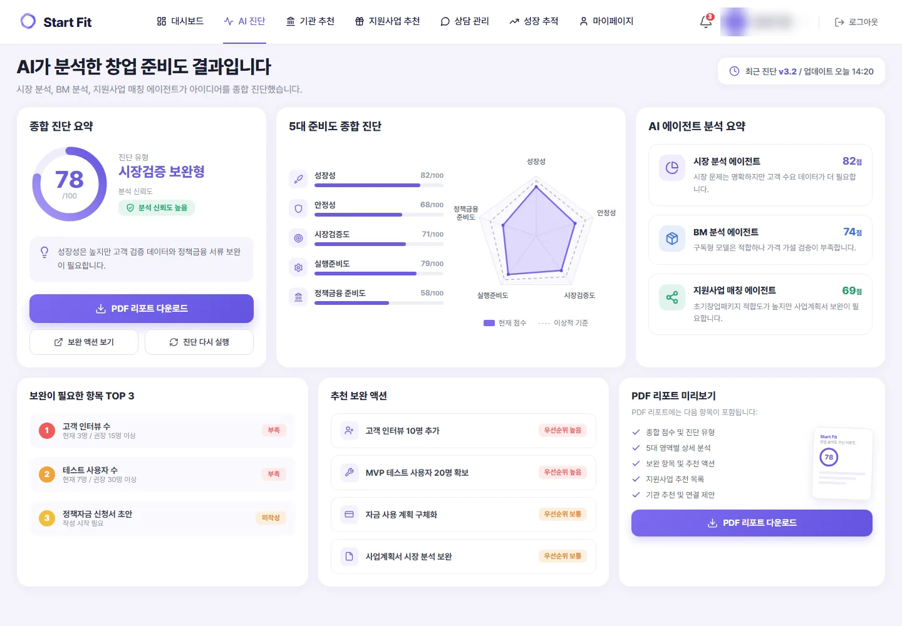
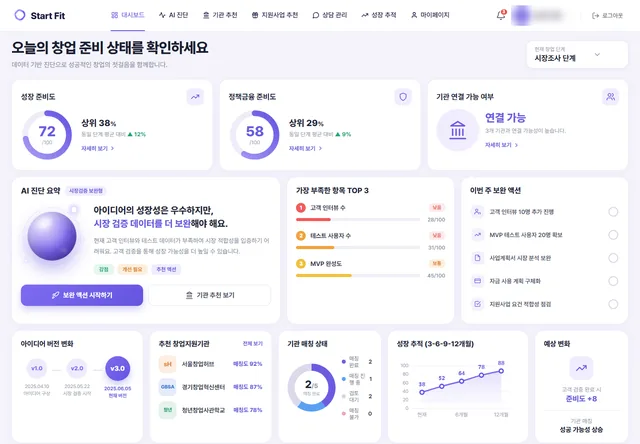
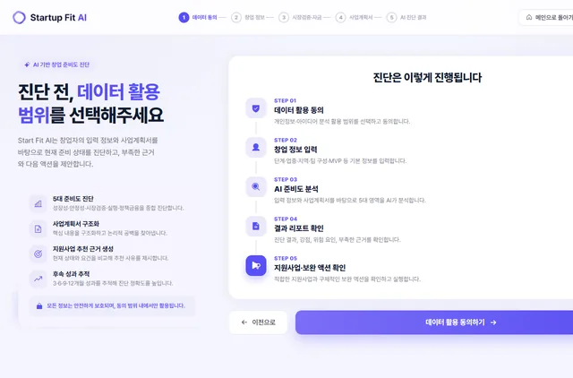
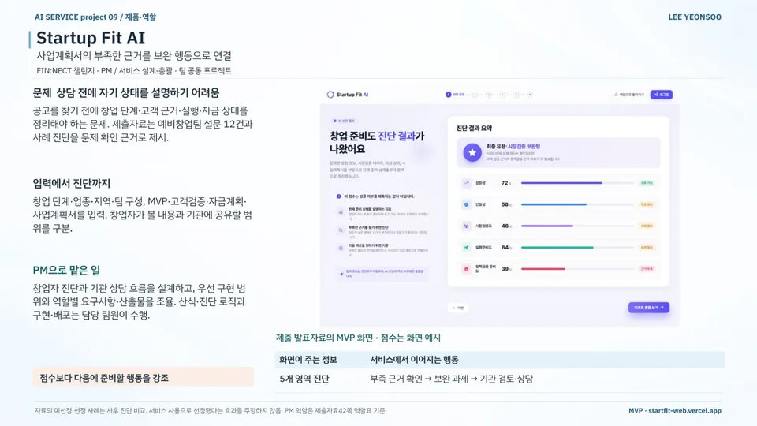
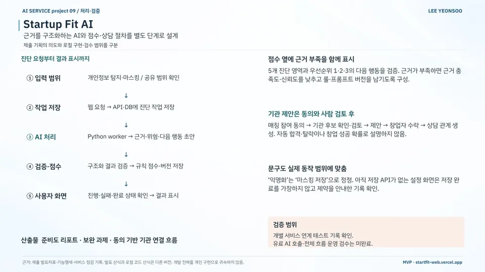
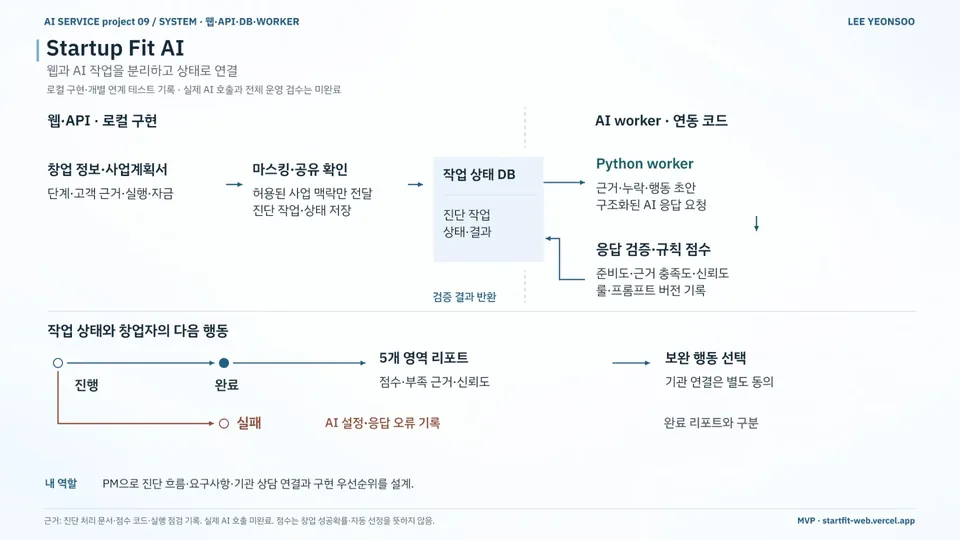

AI 서비스 기획 / MVP 구현 / 창업
Startup Fit AI
Startup Fit AI — Readiness Diagnosis for Early-Stage Founders
창업 준비 상태와 보완 과제를 살펴보는 진단 서비스 설계
현재 상태로컬 구현·개별 연계 시험 · 실제 AI 호출·전체 흐름 점검 전
- 기간
- 2026 (FIN:NECT 챌린지)
- 팀
- 팀 공동 프로젝트
- 내 역할
- PM · 서비스 설계·총괄
- 도구
- 수상
- —
내 기여창업자 진단과 기관 상담 흐름, 구현 우선순위를 설계하고 역할별 요구사항과 산출물을 조율했습니다. 산식·진단 로직·개발·배포는 담당 팀원이 맡았습니다.
사진·화면


크게 보기
크게 보기오늘의 창업 준비 상태 대시보드(예시 데이터)출처GitHub · startfithub (새 창) 
크게 보기진단 시작: 데이터 활용 범위를 먼저 고르는 5단계 흐름출처GitHub · startfithub (새 창)


발표 자료

크게 보기포트폴리오 슬라이드 25쪽 · 본문 내용을 한 장으로 정리한 슬라이드 
크게 보기포트폴리오 슬라이드 26쪽 · 본문 내용을 한 장으로 정리한 슬라이드 
크게 보기포트폴리오 슬라이드 27쪽 · 본문 내용을 한 장으로 정리한 슬라이드


문제
예비창업자가 고객 근거·실행·자금 준비 상태와 다음 행동을 살펴보도록 기획했습니다. 매출·투자·고용 데이터가 없어 기존 기업평가 방식을 적용하기 어려웠습니다.
접근
- 창업 단계·업종·지역·팀 구성과 사업계획서 등을 입력받고 창업자 열람·기관 공유 범위 구분
- API·DB 작업 저장 후 Python worker 처리, 결과 검사·규칙 점수 계산·버전 기록과 진행 상태 표시
- 개인정보 탐지·마스킹과 공유 범위 확인
- 기관 제안은 매칭 참여 동의 → 기관 후보 확인·검토 → 제안 → 창업자 수락 후 상담 연결
핵심 판단
'성공확률 예측' 표현을 버리고 '현재 준비 상태 진단 + 보완 행동'으로 재정의
근거가 부족하면 점수를 그대로 두지 않고 근거 충족도·신뢰도를 낮추고 룰·프롬프트 버전을 기록
자동 합격·탈락 없이 동의와 사람 검토를 거쳐서만 기관 상담으로 연결
개인정보는 마스킹해 저장하고, 저장 API가 없는 화면에서는 저장 완료 표시 제외
결과
- 진단 영역5개부족 근거 → 보완 과제 → 기관 검토
- 문제 확인 설문12건예비창업팀
- 문제 정의 근거: 예비창업팀 설문 12건과 사례 진단, 중간발표 시점 기관 인터뷰 9건
- 예시 데이터로 구성한 팀 웹 시연: 랜딩·저장 방식 선택·진단 과정·결과 리포트·대시보드
- 산출물: 준비도 리포트 · 보완 과제 · 동의 기반 기관 연결 흐름 · 개별 서비스 연계 테스트
- 2026 FIN:NECT 챌린지 권역별 예선 최종 선발 (2026.06)
AI 활용
Python worker에서 AI가 근거·위험·다음 행동 초안을 만들고, 응답 검사 뒤 점수는 규칙으로 계산하도록 설계했습니다. 실제 AI 호출과 전체 흐름 점검은 다음 단계입니다.
한계와 다음 단계
점수는 창업 성공확률이나 자동 선정이 아니며, 선정·미선정 사례 비교는 사후 진단입니다. 발표 산식과 로컬 코드 산식은 다른 버전이고, 배포 화면은 예시 데이터로 구성했습니다.